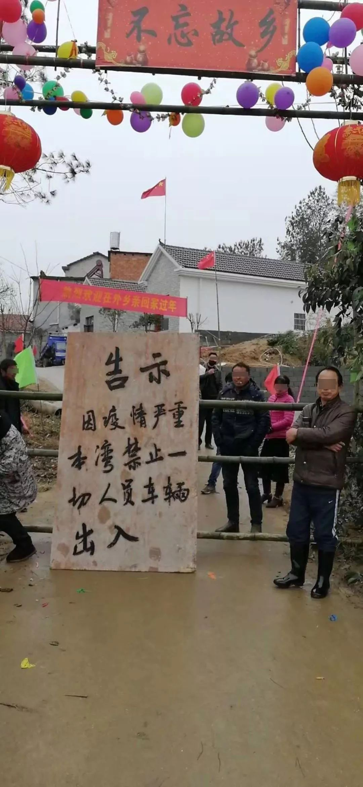
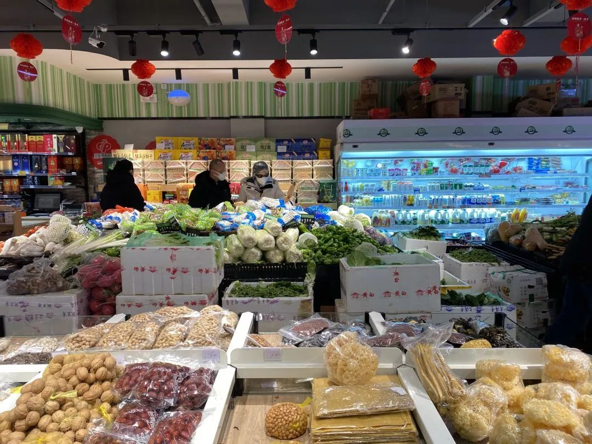
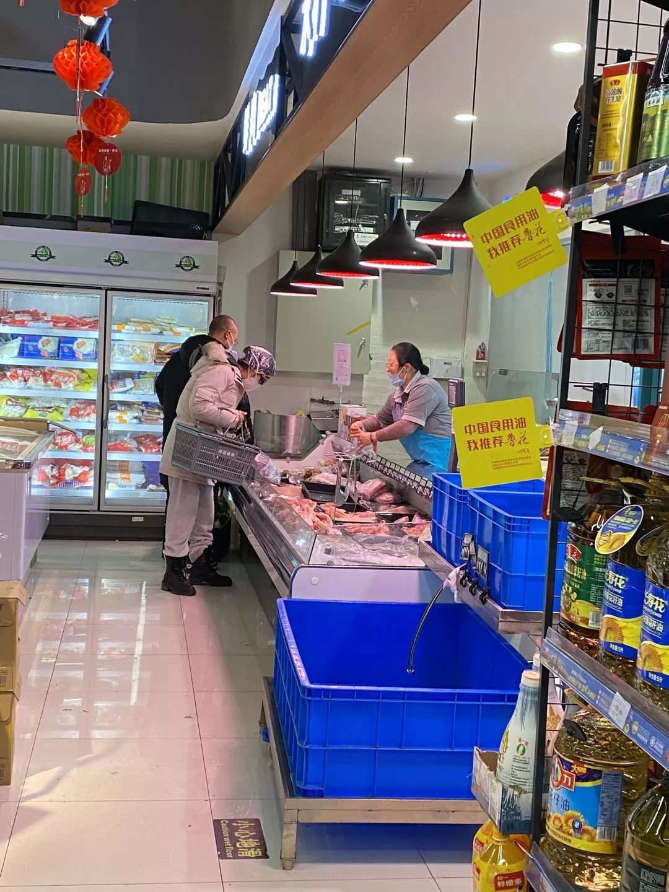
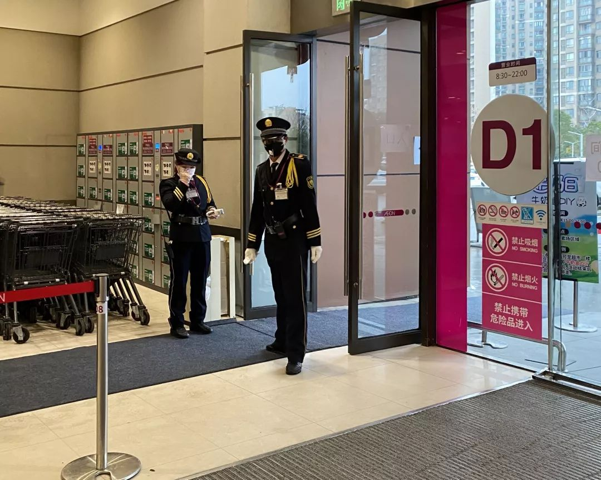

不止有武汉：湖北疫区17城实录（下篇）
原文链接 备份链接 这是一场无法预知开始、但也许可以看到结局的抗击疫情特殊战役，它不仅仅是疫情爆发地汉口的战役，更是武汉及周边，湖北、乃至全国的战役 文 |《财经》记者 房宫一柳 黎诗韵 管艺雯 宋玮 高洪浩 余洋洋 陈晶 实习生 张凡 …


今天是“武汉日常”每日书的第四篇，在孝感的学生写到当地村民自发拦路封村，尽管道路后面的横幅还写着他们希望并且欢迎在外乡亲回家；有在黄石的编剧路过黄石最繁华的步行街，发现那里几乎没有任何动静；有居住在武汉市区自愿帮助陌生人喂宠物的年轻人；以及在这个特别时期，送药给居住在养老院的奶奶的故事。
虽然，疫情仍在持续，但是生活不会停滞不前。
**01
**
在孝感，
小区从来没像现在这么安静

作者：方临
坐标：湖北 孝昌
职业：在读硕士
我在湖北孝感市孝昌县，离武汉最近的市县之一，也是人心惶惶的潜在疫区。
我知道，这里情况一定没有武汉严重，甚至不值一提，但是我们难在哪里呢？全县几乎绝大部分人与武汉有直接或间接接触，潜在危险难以估量，但缺乏关注、疫情不明、医疗资源匮乏、政府反应较慢、部分村民不够重视等。
和很多人一样，大概一个星期之前，我才开始察觉这次疫情的严重性。
那天晚上我躺在床上刷新闻，看到汉口火车站离华南海鲜市场非常近，而我十二天之前是从汉口火车站乘车回家，候车室人挤人，我在里面呆了一个多小时。特别奇怪的，就在那一刻，身体比理智先紧张起来，我瞬间感到头晕乏力鼻塞，我说，完了，我是不是发烧，让妹妹摸我的额头，她摸完嘲笑说，冰凉呢，还发烧！
万幸的是，回家后，我习惯性不爱出门，也无任何不适症状，即便是还有潜伏期，按天算我也安全了。从这之后，我开始每天刷实时报道，看各个平台关于疫情的文章，因为我不常出门闲逛，所以开始询问家人亲戚他们看到的县周边真实情况，同时密切关注爸妈和妹妹的防护问题。
一开始我让家人戴口罩，都是一副认为我小题大做的无畏表情，果断拒绝，仿佛是我过于贪生怕死，怕得有些滑稽。直到湖北台，中央台等他们平日信任的“官方”全部发话了，才开始注意。
接着县里口罩一售而空，瞬间开始短暂的数倍涨价，官方控价之后又稳定下来。之前超市里办年货的人们还毫无防护，吵吵嚷嚷，春节前几天终于全员戴上口罩，排队错身之间保持着微妙的距离以及克制的寡言。
电视上新闻播报的感染人数一天多过一天，直到武汉封城，家人们终于真实地紧张和担忧起来。除夕前夜，爸妈同外公外婆以及其他亲人电话商量取消所有的登门拜年，各自在家，尽量不外出。老妈说:“这下自家买的东西，都得自己吃了”，是啊，这可能是最清净的春节，或者也是对自己最好的春节，因为年前屯的所有年货，最后都要自家享用了，头一次啊。
我调侃地问还在上高二的妹妹，“你怎么不出去玩儿了？”
她说:“我要活。”
如此一本正经、短促有力的表达，令我忍不住想笑的同时，也令我莫名感动。她在同学群里看到同学发来的照片，在她们上学必经之路上，警车开路，后面跟着的救护车正载着被隔离人员。妹说：“姐，我们上学那条路上好像有疑似病人了。”她的大眼睛里闪过一丝慌乱和震惊。我更在意的不是哪条路上有疑似，而是我们县的疫情状况没有人告知，大家都在想方设法探听和猜测，却依然不得知晓具体情况，着实有些无力。
今年四个人的除夕和大年初一都很清静，年饭菜不算多，但也丰盛可口，春晚照例是一家人坐在沙发上磕着瓜子边聊边看，零点的时候，我们周围一片宁静，曾经还有孩子在楼下玩儿仙女棒的嬉笑声，县郊村子里齐放鞭炮的微响。
孝昌封城在除夕这天发布的公告，停运一切公共交通、文娱场所暂停业，恢复时间另行通知。我知道武汉封城，我们必定也该采取措施。所以并没有太多惊讶。
就在刚刚，老妈站在窗边望了望楼下，说：“小区从来没安静成这样，连楼下日夜喧闹的棋牌室也没有叫喊着打麻将的声音了。”我们县这几天看起来也是前所未有的空旷，县郊村民自发拦路封村，尽管道路后面的横幅还写着，他们希望并且欢迎在外乡亲回家。某村的干部骑着摩托拿着喇叭沿路喊话，提醒村民不要走动拜年。

在返乡人员经过的路上，村民自发拦路
这一刻，我突然感觉这个处在疫情危险之中，鲜有人关注的，甚至有些落后的县城，并没有因为如此而给这次疫情控制增添负担。我们这里着实需要更好的医疗保障，更完善的疫情公开措施等等，但是真的绝大部分孝昌人，就像绝大部分被封在城中的武汉人一样，努力做着力所能及的事情，规矩而克制地生活，尽量不为灾难再添一根稻草。
今天中午爸妈做饭，发现家里的煤气用完了，电话询问了一下，只能现场充，于是老妈必须得出趟门。
我叮嘱她戴上两个口罩，她还觉得有点浪费，说：“你舅妈刚说她买了五包口罩花了一百块钱，我之前买的两三块钱一包，涨了十倍啊。”
我问：“不是价格管控了吗，怎么还敢卖这么贵。”
一旁看正电视了解疫情的爸爸接了句：“小县城谁管的到这里来啊。”
出门大概一个小时之后，妈妈回来说，原来我们小区也限制出入了，几天没出去都不知道，大门口有几个人看守，出入要询问去向和时间，并且要测量体温。充罢煤气卡，她顺路去了趟超市，全县只有一家大型超市正常营业，门口也设有测温检查，体温正常方可入内，当然也必须戴口罩，老妈说沿路撞见的人百分百戴着口罩。
超市里人不多，东西正常供应，没有明显短缺，只是青菜比较难买。
我已经好些天没下过楼了，快忘了外面有多冷。妈搓了搓脸说，各个地方都封闭起来了，情况比原先想的要紧张一些，两家亲戚的儿女原本正月结亲，这婚礼刚听说也要取消了，就算敢办也没人敢去吃酒席。
在外地上班打工的亲戚也都一并退了票，等疫情好转些再做打算。
**02
**
黄石最繁华的步行街，
现在几乎已无任何动静

作者：卡斯
坐标：湖北 黄石
职业：抖音编剧
封城后的第二天，奶奶降高血压的药快吃完了，联系父亲在他家那边的药店买到了药，于是我去父亲那边拿药。
沿途路上人很少，路过“中商”，进去看了一下已经没有任何消毒物，询问店员什么时候能够买到，没有明确答复。中商门口贴了海报强调着进出超市必须佩戴口罩，广播里也在循环播报着必须佩戴口罩的要求。里面菜品供应很充足，购买的也多是中老年，那些卖糖果、服装、过年礼品的货柜旁几乎没人，只有菜品区里轮流有人挑选着各式菜品。只是称菜的称重员从两个变成了一个，很多人通过外卖系统下单订菜，这让菜品区里的工作人员更加忙碌。不过这是一个好方法、减少商场里人员流动，以防感染。

黄石空旷的街道，视频截图
面对这场疫情战争，每个人都在储备着各种弹药，更多人准备好了它会演变成持久 战的可能。
离开中商后，看到前面一家药店还开着门，询问店员得知，口罩、消毒剂、酒精全部脱销，莲花清瘟这种预防药也没有。只好离开看看沿途药店有没有可供购买的预防、消毒物资。但结果是连续问了三家药店全部售罄。询问何时才能到货，结果是全省基本封路后，什么时候再有货，不会有明确答案。即使这些物资外省有货补充也是先到武汉，如有余再补周边地市。
黄石一开始没有一例确诊病例，甚至连疑似病例都没有。终于等到了黄石防疫指挥中心第一次披露确诊数据，首次上报直接就有31例，死亡1例。这个数据太恐怖，同学群里两个同学收到指令一个前往黄石与鄂州的交界处设置路障，进行隔绝，另一个同学被派到西塞山区执行防控疫情的任务。
最危险的除了病毒还有那些盲目乐观、不当回事、意识欠缺的人。缺乏防范意识不仅将会给自己还会给身边的人造成非常大的传播风险。
我在回来的路上看到有大人带着孩子在路边走的和脱下口罩在路边吃东西、抽烟的，一律绕行。在人人自危的时候对那些意识淡泊的人我不会好心规劝，也不会产生怜悯和同情，剩下的只有排斥和疏远。这是本能、大部份人都会产生的本能。
走回来的途中经过黄石最繁华的步行街，现在几乎已无任何动静。想到威尔史密斯演过的一部电影《我是传奇》。电影里他成为了被病毒袭击纽约市里唯一的幸存者，那些科幻灾难片总是那么震撼，对人类的警示希望有更多人会在意。我想这次战“疫”过后，我会以此为契机写个病毒肆虐的科幻小说，对未知的恐惧和处于绝望中的新生一定是个好主题。
**03
**
武汉武昌区，
我帮陌生人喂留守宠物

作者：王鬼马
坐标：武昌
职业：童书编辑
在家里困了这几天，无力感实在太深重，还是决定做些什么。之前就有朋友在转发求助信息，有些回外地老家的人因为宠物独自留在武汉，可能面临没有粮水被饿死的情况。简单评估了下，不太可能接触到人便决定参与其中，希望能够给他人提供一点帮助。
联系我的姑娘正好在我家小区附近，相隔2个路口，骑车10分钟就可以到。出门前做了充足的准备：戴好口罩并随身带了一小瓶84稀释液喷雾。很快就和开门锁的师傅联系好在小区楼下碰头。一见面，我还没有走上前，师傅就做手势让我站在原地，我们俩大概相隔1米多的距离，他没有摘下头盔，解释说他的口罩在来的时候掉了。
我赶紧接话：那您直接上楼，我离您远一些。我们一前一后上楼，他在上面开门，我在下面观望，隔着整整半层楼。那个画面，自己都觉得有些好笑。
很快门锁就开了，我和师傅简单道谢后立刻给求助的姑娘打视频电话，一边和她说话一边给猫咪加粮、换水、铲屎、通风。事情处理得很快，离开前仔仔细细洗了个手，连带着师傅碰过的大门钥匙也一并洗了一遍。
很遗憾的是到临走都没看到猫咪的踪影，听说它叫年糕，还没有满一岁，因为太过胆小怕寄养会有应激反应，所以只能被独自留在家里成为唯一的留守儿童。
为了避免自己外出可能携带病毒回来，进门首先做了简单的消毒和隔离处理：门口迅速脱下鞋子和外套放到露台上通风，购买的食材和饮料也快速分类放到离窗口比较近的阳台；然后摘下口罩，喷上84稀释液扔进专门装废弃口罩的垃圾袋，再去洗手间用滴露洗手并洗脸。
总结起来，今天大概是我这段时间心情最好的日子。为陌生人做一点点力所能及的事情，给自己一顿满足到内心充盈的美食，两件再普通不过的事情成了我抵抗疫情消极情绪的良药。现在，甚至有点后悔，一天只做一件就好了，这样我就能有两天的好心情。
**04
**
你们是从武汉市中心回来的吗？

作者：糖吉可得
坐标：武汉
职业：记者
从武汉市驱车回区里，门一打开，刚把行李卸下，居委会就有两位大妈迎上门来，“你们是从武汉市中心回来的吗？来，登个记。”
父亲、弟弟和我回答，是是是；母亲回答，不是不是不是。两个截然相反的回答就这么赤裸裸地撞在一起。在场的人面面相觑，无人接话。
母亲见状，打破尴尬，“我们就是刚出去拜年回来的，没去武汉。”
父亲见这拙劣的谎言，怒了，“什么没去，我们就是刚从武汉回来！来，笔给我，我把全家的名都签了。”
等大妈们拿着签好的表格悻悻而归后，父亲质问母亲，“这有什么好骗的？家里人又没发烧，诚实登记不就行了？”
“那要是发烧了呢？他们会把我们抓去隔离的！”她振振有词。
“要是发烧了，哪要别人抓，自己就应该自行隔离！”父亲快炸了，“我算是懂那些瞒报的人，在想什么了。”
母亲说，“随便你们怎么说，反正我不相信医院。”
两人看对方，都是一种众生皆醉我独醒的神情。
武汉肺炎席卷而来，给我们小小的四口之家带来了惶恐，也带了比平日更为激烈的争吵与温情。
**05
**
禁行之后，
我们给在养老院的奶奶送药
作者：FF
坐标：武汉 金银湖
职业：淘宝女装从业者
今天是1月26日大年初三，封城第四天。原本打算睡懒觉的我9点就被爸爸叫醒。原来奶奶长期需要服用的药吃完了，需要我们给她去买。因为奶奶去年做过一次手术，有两种药必须长期服用。她所在的养老院已经全部禁止外出，工作人员有限也无法帮她买药，只能让家属买了送过来。
昨天刚出的私家车禁行令，今天就遇上这种情况。我的瞌睡立刻醒了，赶紧先给社区打电话咨询出行状况。我详细说明情况后，社区人员告诉没有收到禁行短信的车是可以出行的。这下我就放心了，赶紧起床。简单用餐之后，准备出门。原本打算我一个人去，但爸爸执意要一起去。爸爸心脏做过手术，需要长期服用几种药，他说他的必备药也只够吃一周了。
其实我知道，他也想去看一下奶奶，毕竟过年无法团聚还是很挂念。
因为我爸的药需要去指定药店购买，我们戴好口罩、帽子、眼镜就驾车出发前往市中心的一家药房。出发前我还用稀释过的84消毒液把车内饰全部擦了一遍，这样更安心。路上车辆确实非常少，一路畅通到了药店。
药店门口需要排队进入，一次进两位顾客，里面的顾客买完药出去后面的才能进。突然觉得有点像排队进奢侈品店的节奏。工作人员都穿上了防护服，每位进店顾客都必须测量体温。门口排队的顾客并不太多，而且大部分是来购买口罩的，口罩正常价格，但是一人限购一盒。我们也买了一盒口罩，奶奶和爸爸需要的药也都买到了。药房的工作人员也很辛苦，全部都在加班，现场秩序也维护得很好。重症医保的窗口也在营业。


药店入口大家都在有序排队进店

口罩正常价格出售，每人限购一盒

重症医保窗口依旧营业
重症医保患者可以带病历过来开药
买好药就准备出发养老院了。路上路过一家武商量贩，爸爸要我停车，进去给奶奶买点水果吃的。我看门口车停得还有点多，担心里面人多。我跟爸爸说：“我们去个小超市买吧。”他说附近没有超市了，只能在这里买。
我心想怎么可能，我打开地图准备查。爸爸还不耐烦了，“说了附近没有超市了，就去这里面买，再往前就到养老院了！”
我说：“是怎么非要往人多的地方跑！奶奶那里不会差吃的喝的！”他又生气了：“你跟我说的功夫，我们都买完了！你个年轻人做事不能快点！”
这种时候了，还非要跑人多的地方，我真的被气到了。就好像长辈要我们穿秋裤不要熬夜，我们也听不进去一样，我现在终于能体会这种感受了。

超市门口停满了车


进超市也必须测量体温，超市货品基本供应充足
买了些水果和点心，也给家里补充了点干粮就离开超市了。虽然刚才跟爸爸发生了一点不愉快，但是我现在静下来也能理解他的心情，毕竟也是因为孝顺。
到了养老院门口，我们就给奶奶打电话了。以为会是工作人员来，结果奶奶戴着口罩亲自下楼了。看到奶奶的那一刻，我真的很激动，看到她还挺精神，我也就放心了。
爸爸隔着闸门把药和水果递给她。奶奶说养老院里一切都好，让我们放心。
毕竟室外有点冷，我们让奶奶赶紧回去。她却一直站在门口不愿意进去，当时我眼泪都要掉下来了，自从疫情开始，奶奶是我除父母以外的第一个见到亲人。
她不停地问：“你们车停在哪里啊，我看着你们上车。”
我说：“我们马上上车，您别着凉了！快上楼去啊！”我们怕她一直不愿意进去就赶紧上车了。回到车上，爸爸好像还是有点不高兴，我笑着说：“爸爸你现在是汉口第一大孝子了啊，为了给自己的妈妈送药和水果，拉着女儿往人多的超市跑！”他听了也笑了，算是缓解了气氛。


爸爸亲手把药和水果递到奶奶手里，
这也算是一次短暂的团聚吧
今天最重要的任务已经完成，我们安心回到了家中。见到了奶奶，我也很开心。今天一天我没怎么看疫情的报道，感觉心情好了一些。
虽然，疫情仍在持续，但是我们的生活不能停滞不前。我给自己立了flag：明天开始，每天按时运动，听自己喜欢的音乐，弹弹吉他，专心画画，在家做一个文艺青年。保持一个好的心态，才是过好每一天的保证。自怨自哀并不能改变什么，只有改变自己的心态，才能健康愉快！无论疫情还有多久才结束，它总会有完结的那天。过好现在的每一天，才是最重要的吧！保持良好的心态，保护好自己和家人的健康，我们一起努力加油。

穿工作服的阿姨监督每位进店顾客是否戴口罩，
她一直站在门口


蔬果生鲜目前供应充足，每位顾客都佩戴了口罩

超市入口负责测量体温的工作人员
互动话题

三明治
如果你也在武汉周边县市，欢迎跟我们分享你现在的日常

我在…

武汉日常


关注公众号三明治，点击菜单栏“武汉日常”
可找到“武汉日常”全部文章
💬
本文来自每日书武汉日常班，50名作者正在和我们一起每日记录。
在武汉“封城”第一天，三明治招募了50名人在武汉和家乡在武汉的朋友，一起来用文字忠实记录他们在这个特殊时期的生活日常，并且每天摘录一部分他们的每日书发表。作为大疫情之下的真实片段，为时代留下一点普通人的痕迹。


了解2月每日书详情

原文链接 备份链接 这是一场无法预知开始、但也许可以看到结局的抗击疫情特殊战役，它不仅仅是疫情爆发地汉口的战役，更是武汉及周边，湖北、乃至全国的战役 文 |《财经》记者 房宫一柳 黎诗韵 管艺雯 宋玮 高洪浩 余洋洋 陈晶 实习生 张凡 …
原文链接 备份链接 【编者按】首先，祝各位新年安康！ 我们的前方记者正在采访报道新型肺炎疫情，但我们知道，也许你们在更前方。这里，是一位武汉的年轻妈妈除夕发来的日志。中国青年报社正在公开征集原创文字、图片、视频。欢迎通过我们的全媒体平台告 …
原文链接 备份链接 2020年1月23日凌晨2点，武汉市宣布自10时起交通封城，尽管很多人还在睡梦之中，在8个小时的窗口时间内，仍有很多人选择连夜出城。更多的人，则留了下来，有的人别无选择，有的人则担心自己无论去哪里都是潜在的传播者。一位 …
原文链接 备份链接 几位口罩行业的从业者，都是在大量微信、电话疯狂轰炸的间歇，接受我们采访的。所有人的语速都异常急促——在过去的一周时间内，他们接过工信部、各地应急办、市级政府的电话；也接过各省医院、药店、大小代理商的电话；还有从未打过交 …
原文链接 备份链接 医疗防护资源不足是常态，各地资源调配需平衡，“灯下黑”区域渐次光亮，但少数地区的疫情宣传依旧不到位 外地务工返乡者最担忧的问题是年后经济收入断流、地域歧视，担心节后可能无法返工 本文首发于南方人物周刊 文 | 本刊记 …